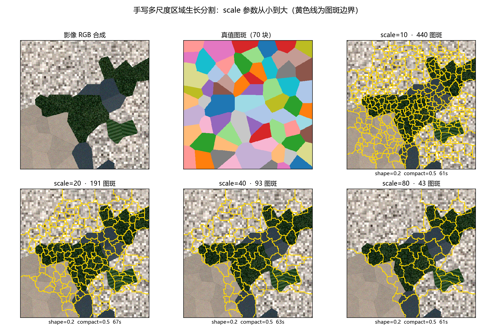
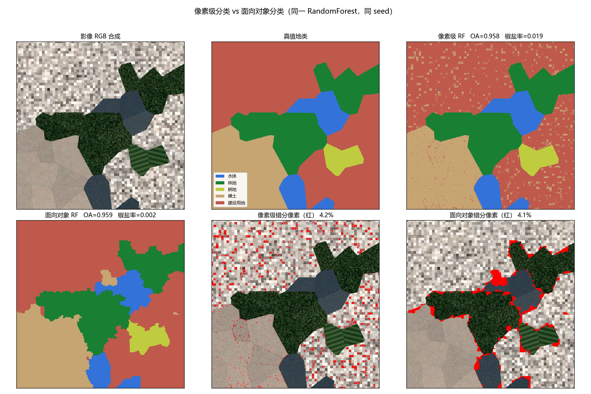
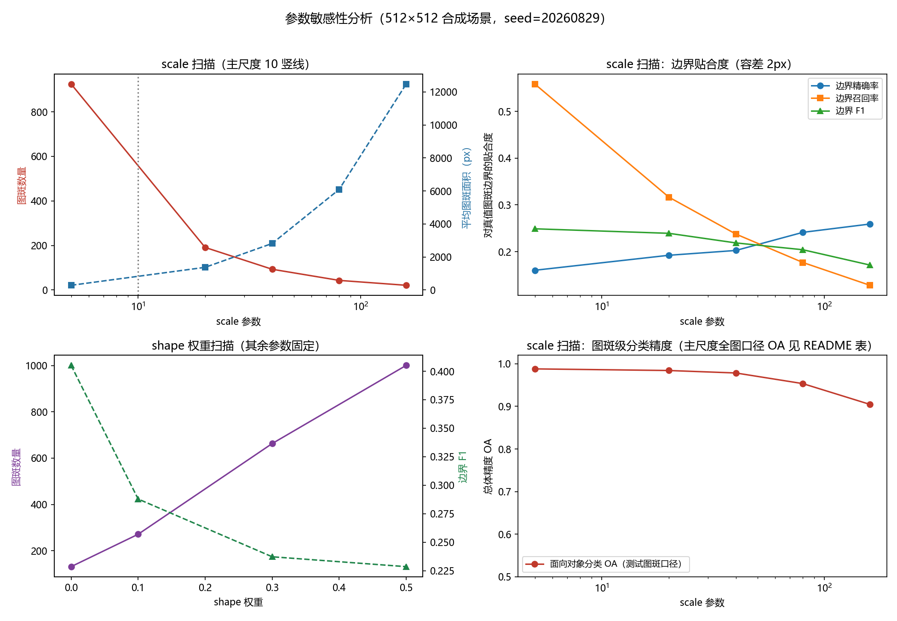

手写面向对象遥感分割分类流水线
复刻 eCognition 多分辨率分割思路 · Python + rasterio + scikit-image · 核心分割逻辑零 SDK 手写
seed 20260829影像 512×512×4 波段
scale 10 / shape 0.2 / compactness 0.5
440 图斑 · 261,704 次合并 · 61s
一句话结论
0.959 vs 0.958总体精度 OA：面向对象 0.959 ≈ 像素级 0.958（持平略胜）
↓ 11 倍椒盐率 0.0018 vs 0.0193 —— 碎斑大幅消失，矢量制图免后处理
+49%边界贴合 F1 0.481 vs 0.323 —— 对象边界自动贴住地物边线
对比总表（全图口径）
| 指标 | 像素级 RF | 面向对象 RF（本流程） | skimage SLIC 对照 |
|---|
| 分类单元 | 262,144 像素 | 440 图斑 | 441 超像素 |
| 总体精度 OA | 0.958 | 0.959 | 0.945 |
| 椒盐率 | 0.0193 | 0.0018 | 0.0002 |
| 边界贴合 F1（vs 地类真值） | 0.323 | 0.481 | 0.285 |
| 分割耗时 | —（免分割） | 61s（手写 MRS） | 0.8s（k-means） |
成果图

图 1 · 多尺度分割对比 —— scale 从 10 到 80（440→43 图斑）：同一合并树按尺度阈值截断，层级严格嵌套，即 eCognition"多尺度层级"的来源。

图 2 · 像素级 vs 面向对象 —— 上：RGB/真值/像素级分类；下：对象级分类与两套误差图。像素级错分散布全图（椒盐），对象级错分收缩到边界带。

图 3 · 参数敏感性曲线 —— scale/shape 扫描下的对象数、平均面积、边界贴合与分类精度。
方法摘要：异质性准则（Baatz & Schäpe 2000）
① 单像素起步
4 邻域邻接图，全部相邻对象对的合并代价入优先队列
② 贪心合并
弹出全局最小代价对，统计量/周长/邻接表增量融合
③ 阈值截断
堆顶代价 > scale 即停 —— 不同 scale 的结果天然嵌套
④ 特征 + 分类
19 维图斑特征 → RandomForest → 回填栅格 + 矢量化
f(a,b) = wcolor·Δhcolor + wshape·Δhshape， wcolor = 1 − wshape
Δhcolor = Σb wb [ nmσm,b − naσa,b − nbσb,b ] （同类≈0，跨类陡增 → 边界停位）
Δhsmooth = nm(bm/lm) − na(ba/la) − nb(bb/lb) Δhcpt = nm(bm/√nm) − na(ba/√na) − nb(bb/√nb)
实测发现：吞并狭长边界条带时形状项为大负值（条带自身 b/√n 惩罚极重），可抵消光谱代价引发链式吸收直至全图并一 —— scale 的安全上限与 shape/compactness 取值耦合，换参须重新标定。
参数敏感性（512² 场景，逐参数扫描其余固定）
scale（尺度阈值）
| 参数 | 图斑数 | 平均面积(px) | 分割边界F1 | 图斑级OA* |
|---|
| 5 | 925 | 283 | 0.249 | 0.988 |
| 20 | 191 | 1372 | 0.239 | 0.984 |
| 40 | 93 | 2819 | 0.219 | 0.978 |
| 80 | 43 | 6096 | 0.204 | 0.953 |
| 160 | 21 | 12483 | 0.171 | 0.905 |
对象数随 scale 单调下降；图斑级分类 OA 随 scale 单调下降（对象越大越易跨界整斑错分）——"过分割对分类几乎无害，欠分割致命"。* 图斑级 OA 为测试图斑口径；全图口径见上表。
shape（形状权重）
| 参数 | 图斑数 | 平均面积(px) | 分割边界F1 | 图斑级OA* |
|---|
| 0 | 131 | 2001 | 0.405 | 0.992 |
| 0.1 | 271 | 967 | 0.288 | 0.985 |
| 0.3 | 663 | 395 | 0.237 | 0.988 |
| 0.5 | 1001 | 262 | 0.229 | 0.991 |
shape=0（纯光谱）在本合成场景反而最优（131 对象、边界 F 最高）：负形状偏移使混合像元壕沟条带被两侧吸收、对象边界贴住田块边线；真实数据中道路/建筑等形状语义强的目标仍需形状项。
compactness（紧致度）
| 参数 | 图斑数 | 平均面积(px) | 分割边界F1 | 图斑级OA* |
|---|
| 0 | 101 | 2595 | 0.367 | 0.960 |
| 0.3 | 344 | 762 | 0.250 | 0.983 |
| 0.8 | 685 | 383 | 0.238 | 0.981 |
复现方式
E:\Ana\python.exe scripts\run_demo.py # 一键端到端（含 12 点扫描，约 14 分钟）
E:\Ana\python.exe test\test_pipeline.py # 31 项断言自动化质检
内置合成场景（5 类地物 × 12 分区 × 70 田块，分类别纹理 + 像素噪声 σ=0.028 + 田块光谱抖动 + 边界混合像元），自带像素级与图斑级真值，不联网。
下载
源码